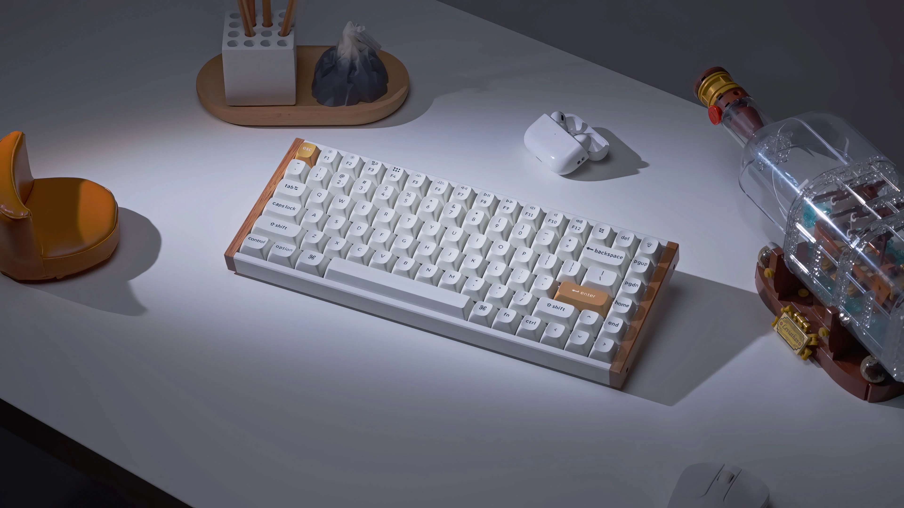
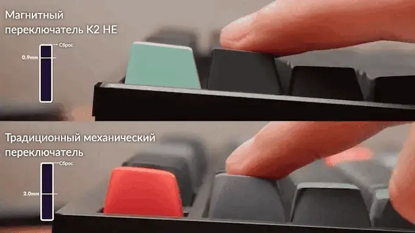
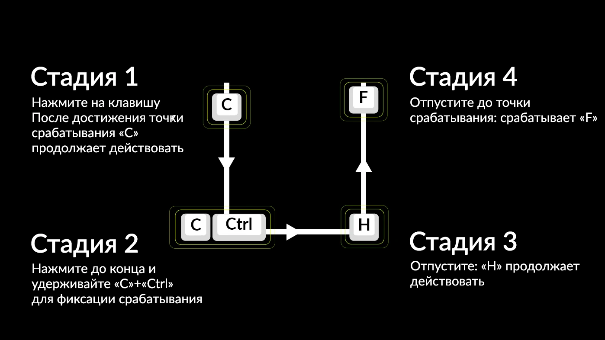
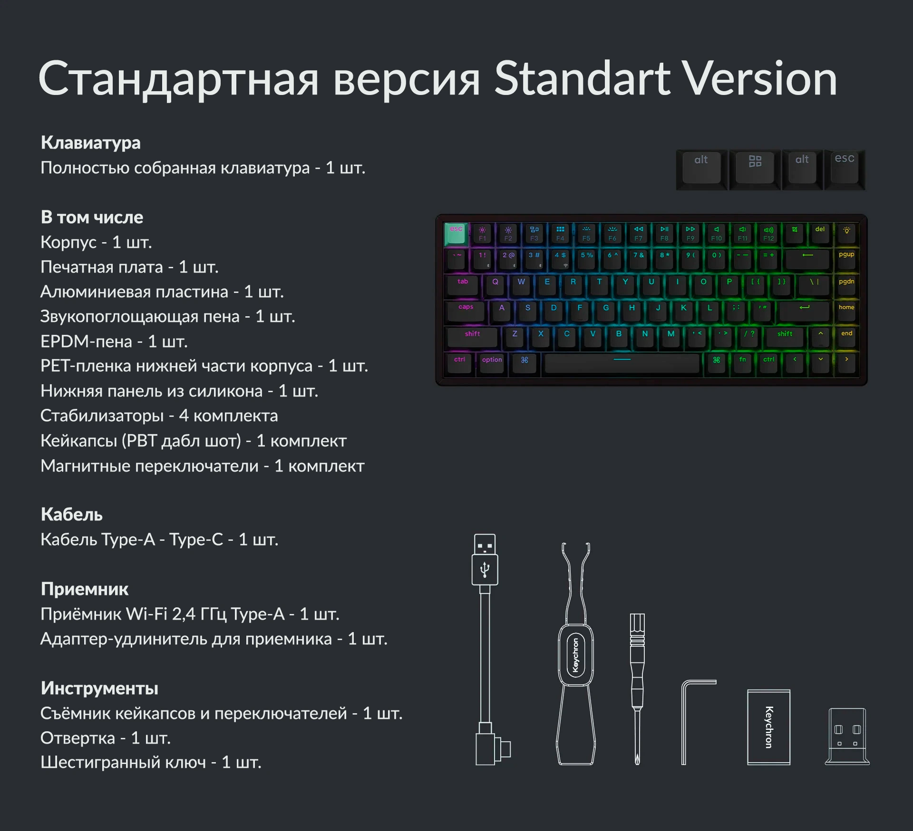

Навсегда измените свои впечатления от игры и набора текста с клавиатурой Keychron K2 HE - единственной клавиатурой, выигравшей награду в области инноваций 2025 CES Innovation Award. Сочетая лучшие качетва традиционных механических клавиатур и технологию магнитных клавиш, она предоставляет совершенные возможности с точки зрения чистоты, минималистичного дизайна и естественных акцентов розового дерева.
Keychron K2 HE - кастомная беспроводная клавиатура с магнитными клавишами
39990.00 ₽ 49990.00 ₽
Модель: K2H-F1
В комплект полностью собранной клавиатуры входит:
печатная плата, корпус и алюминиевое основание
кейкапсы (в том числе для Maс и Windows)
магнитные переключатели Gateron с регулируемой точкой срабатывания и двойным рельсом
Клавиатура K2 HE совместима исключительно с магнитными переключателями Gateron с двойным рельcом. Она не поддерживает другие магнитные переключатели, например Gateron Magnetic Jade или Gateron KS-20.
Клавиатура Keychron К2 HE
Беспроводная клавиатура с магнитными переключателями, 75% клавиш которой полностью настраиваемые - это прорыв в технологии изготовления переключателей. В них вместо механических контактов используются магнитные датчики для измерения глубины нажатия и определения срабатывания, что даёт полный контроль надо откликом каждого переключателя.

Особая модель Special Edition
Модель Special Edition представлена в двух цветовых темах, обе с акцентом природного розового дерева - светлого тона в белом варианте исполнения клавиатуры, и темного тона в черной версии. В обоих вариантах используются кейкапсы PBT дабл шот профиля OSA и рамы из алюминия с деревянными вставками.
Выбери боковые декоративные элементы клавиатуры
Украсьте свою клавиатуру кастомными деревянными боковыми элементами, доступными в светлой и темной отделке. Уникализируйте своё устройство лазерной гравировкой или текстом на ваш выбор, что вместе с природными мотивами и ручной работой придаст уникальный стиль.
Стандартный вариант Standard Version
Стандартный вариант оснащён кейкапсами PBT дабл шот профиля Cherry с прозрачным шрифтом и рамой из алюминия.
Особенности клавиатуры
Для клавиатуры доступны различные кейкапсы, переключатели и другие аксессуары.
Магнитные переключатели Gateron с двойным рельсом
Клавиатура Keychain K2 HE поставляется с предварительно смазанными магнитными переключателями Gateron с двойным рельсом для сверхстабильных и сверхотзывчивых нажатий, соответствующим современным промышленным требованиям по скорости отклика, точности управления. Клавиатура даёт неповторимый эффект во время игры, плавность и стабильность.
В отличие от традиционных механических переключателей, в магнитных переключателях для определения момента нажатия применяются чувствительные к давлению датчики на основе эффекта Холла, что означает возможность настройки точек срабатывания клавиш с точностью 0,1 миллиметра.
Настраиваемый момент срабатывания
Точно настройте каждую клавишу, выбрав точку срабатывания при глубине нажатия от 0,2 до 3,8 мм с точностью 0,1 мм. Установите небольшую глубину для быстрой реакции и большую глубину для исключения случайного срабатывания для сокращения случайных касаний. Это полезно для игр и при печати.

Приоритет последнего нажатия (LKP) и нажатие с фиксацией Snap Click
LKP позволяет незаметно производить изменения направления движения в игре путём определения приоритета последнего нажатия клавиши. В таких играх, как Valorant, играть стало удобнее. Функция Snap Click отдаёт приоритет клавише с более глубоким нажатием при одновременном нажатии двух клавиш, автоматически отменяя нажатие клавиши с неглубоким нажатием.
Эти функции делают движение задом в игре несложным, давая точность и скорость, необходимую для игры с высокими значениями FPS.
*По умолчанию функции отключены, но при необходимости их можно легко включить в веб-приложении Launcher.
Динамичное быстрое срабатывание
Активирует и деактивирует клавиши в зависимости от скорости нажатия, а не по заранее заданным значениям глубины. Это означает немедленную реакцию клавиш - нажмите для активации, отпустите для сброса - это позволяет совершать более быстрые и точные нажатия. При быстрой игре это даёт возможность производить сложные действия в реальном времени без задержек, что даёт серьёзное преимущество при быстром перемещении.
Одна клавиша - несколько действий
Благодаря функции динамического нажатия на клавиш (DKS) теперь можно назначить до 4 разных действий на одну клавишу в зависимости от глубины её нажатия. Легкое касание перемещает игрового персонажа, более глубокое заставляет его бежать, а отпускание клавиши позволяет выполнить дополнительные команды. Это многоступенчатое управление позволяет с легкостью выполнять одно за другим множество действий, улучшая контроль и повышая скорость, ускоряя реакцию и делая её более точной.

Аналоговый режим
Испытайте мощь аналогового режима клавиатуры Keychron K2 HE, который даёт клавиатуре точность игрового контроллера. В этом режиме клавиатура реагирует на силу нажатия вместо обычного сигнала нажато/отпущено, позволяя добиться более плавного и динамичного управления.
При каждом нажатии клавиши K2 HE определяет глубину нажатия, переводя её в скорость и интенсивность. Наслаждайтесь нюансами управления и повышенной отзывчивостью в гоночных играх, спортивных симуляторах и прочих играх.
Программирование с QMK & Launcher
Open-source прошивка QMK означает безграничные возможности по переназначению клавиш, использованию макросов, горячих клавиш и пр. С помощью веб-приложения Keychron Launcher вы можете без усилий переназначать клавиши, настраивать точки срабатывания, управлять магнитными переключателями, создавать персонализированные макросы, задавать горячие клавиши и сочетания клавиш.
* Используйте браузеры Chrome / Opera / Edge последней версии, чтобы запустить Launcher и подключить клавиатуру к вашему устроству в режиме проводного соединения.
Получите максимумальную скорость в играх при помощи мгновенного беспроводного подключения клавиатуры K2 HE по Wi-Fi 2,4 ГГц с частотой опроса 1000 Гц. Для одновременной работы с компьютером, телефоном и планшетом вы можете без усилий подключить K2 HE посредством Bluetooth 5.2 ко всем трем устройствам.
Клавиатура K2 HE даёт исключительно короткое время задержки срабатывания в своём классе, превосходя ведущие клавиатуры в индустрии.
*Сведения о производительности были получены с помощью стороннего веб-сервиса оценки производительности
RTINGS.
Приятное звучание клавиатуры
Благодаря предварительно смазанным переключателям, EVA-акустической пене толщиной 3,5 мм, EPDM-пене и силиконовой пластине внутри клавиатуры нажатия клавиш клавиатуры Keychron K2 HE приятные, мягкие и солидные, они улучшают ощущения от нажатий.
Мощное ядро клавиатуры
Основанное на мощном микроконтроллере с 256 кб флеш-памяти и open-source прошивке QMK, оно даёт большую гибкость разработчикам. Частота опроса 1000 Гц в стандартном исполнении при подключении через Type-C и по Wi-Fi 2,4 ГГц даёт значительные преимущества в игровых соревнованиях.
Совместимость со всеми устройствами
Созданная с учетом потребностей пользователей Mac, но сохраняющая совместимость с Windows-устройствами, клавиатура K2 HE оснащена переключателем системы и дополнительным набором кастомных кейкапсов для Windows и macOS. Теперь вы можете сохранить два различных раскладки клавиатуры по однй для каждой операционной системы.
Кейкапсы PBT дабл шот
Кейкапсы PBT дабл шот (с прозрачными символами профиля Cherry в стандартном варианте или непрозрачные с профилем OSA в варианте Special Edition) обладают превосходной стойкостью к кожному жиру, улучшают ощущения при печати и предотвращат потускнение символов.
Горячая замена кейкапсов
В отличие от механических переключателей, срабатывающих от физического контакта, для обнаружения нажатий в магнитных переключателях с эффектом Холла используются магниты. Это позволяет без особых усилий менять переключатели на совместимые магнитные переключатели с эффектом Холла.
*Клавиатура K2 HE совместима только с магнитными переклчателями с двойным рельсом, представленными на сайте Keychron.
RGB LED-подсветка верхнего края клавиш
Выберите один из 22+ вариантов подсветки, настройте тон, насыщенность, яркость и скорость эффекта в веб-приложении Keychron Launcher. Задайте свой стиль и создайте атмосферу, уникальную для вас.
Новые улучшенные стабилизаторы
Наши усовершенствованные стабилизаторы теперь оснащены усиленными боковыми стенками вокруг штифта, обеспечивающими дополнительную защиту и повышающие устойчивость. Эти "стены" создают прочное соединение между переключателями и кейкапсами, гарантируя более плавное и надёжное нажатие крупных клавиш - пробела, Shift, Enter и Delete.
Комплект поставки

Технические характеристики
Стандартная версия
Особая версия Special Edition
Длина
316,4 мм
320,5 мм
Ширина
126,7 мм
126,7 мм
Высота спереди
30,2 мм (включая кейкапсы)
30,1 мм (включая кейкапсы)
Высота сзади
40,7 мм (включая кейкапсы)
40,7 мм (включая кейкапсы)
Вес
прибл. 980 г
прибл. 960 г
Кейкапсы
Кейкапсы PBT дабл шот с профилем Cherry, прозрачные символы
Кейкапсы PBT дабл шотс профилем OSA, непрозрачные символы
Материал рамы
Алюминий
Алюминий + дерево
Материал нижней части корпуса
ABS-пластик
ABS-пластик
Стабилизатор
Ввинчиваемый в плату
Переключатели
Gateron - магнитные переключатели с двойным рельсом
Микроконтроллер
ARM Cortex-M4 32-бит STM32F402RC (флеш-память 256 кб)
Углы
5° / 9,34° / 12.43°
Подсветка
RGB-LED по верхнему краю
Материал основания
Алюминий
Чувствительность
0,1 мм
Быстрое срабатывание
Да
Настраиваемые точки срабатывания
0,2 - 3,8 мм
Динамические нажатия
До 4 действий на кнопку
Способ монтажа
Монтаж на каркас
Кабель
Кабель Type-A - Type-C
Подключение
Wi-Fi 2,4 ГГц, Bluetooth, проводное - Type-C
Версия Bluetooth
5.2
Название устройства Bluetooth
Keychron K2 HE
Аккумулятор
Перезаряжемый литий-полимерный 4000 мАч
Время беспроводной работы (подветка отключена)
До 110 часов (результаты лабораторных испытаний могут отличаться от реального использования)
N-Key Rollover (NKRO)
Да, в беспроводном и проводном режиме
Поддержка горячей замены
Да, совместимость только с магнитными переключателями с двойным рельсом Gateron
Частота опроса
1000 Гц (проводное и Wi-Fi 2,4 ГГц)
125 Гц (Bluetooth)